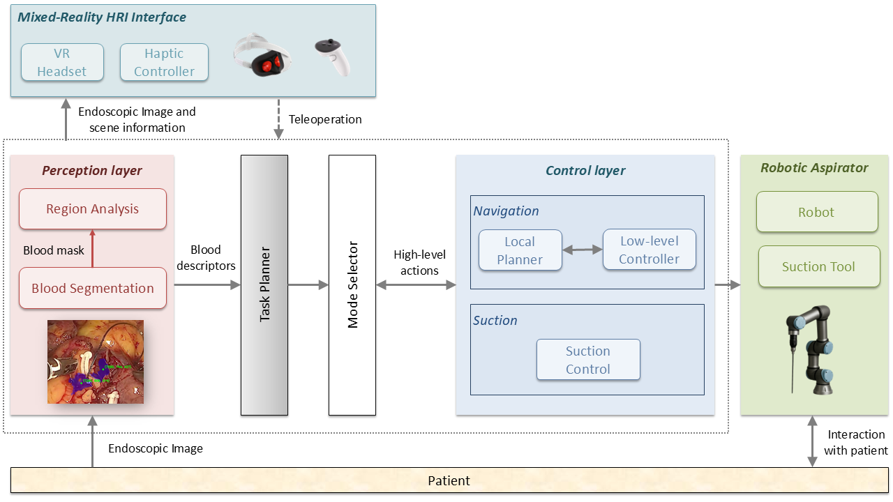

Abstract
Robotic assistance in minimally invasive surgery has significantly improved precision and dexterity; however, many supportive tasks, such as blood aspiration, still rely on manual operation. This work presents the design and implementation of an autonomous robotic aspirator capable of detecting and removing intraoperative bleeding without continuous human intervention.
The proposed system integrates a perception module based on a convolutional neural network for real-time blood segmentation, a task planner for high-level actions execution, and a control strategy based on artificial potential fields for autonomous navigation. Additionally, a mixed-reality human–robot interaction interface is incorporated to enable system supervision and seamless transition to teleoperation when required.
The system was experimentally validated with a set of in-vitro experiments under three representative bleeding scenarios, evaluating four suction strategies based on the computation method for the target selection. Results demonstrate fast reaction times (below 0.04~s) and high blood removal rates (above 80\% in all cases). The comparative analysis reveals that the performance of the suction strategies is scenario-dependent and highlights a trade-off between suction efficiency and removed are.
These findings support the feasibility of autonomous robotic aspiration and provide insights into the design of adaptive strategies for surgical assistance, contributing toward increased autonomy and improved workflow efficiency in minimally invasive procedures.
Key Contributions
Insert Main Figure Here

Insert Quantitative Results
Suggested content: efficiency boxplots or summary comparison figure.
Insert Segmentation Examples
Suggested content: frame + predicted mask pairs.
Citation
If you use this project page, code, or results, please cite the paper.